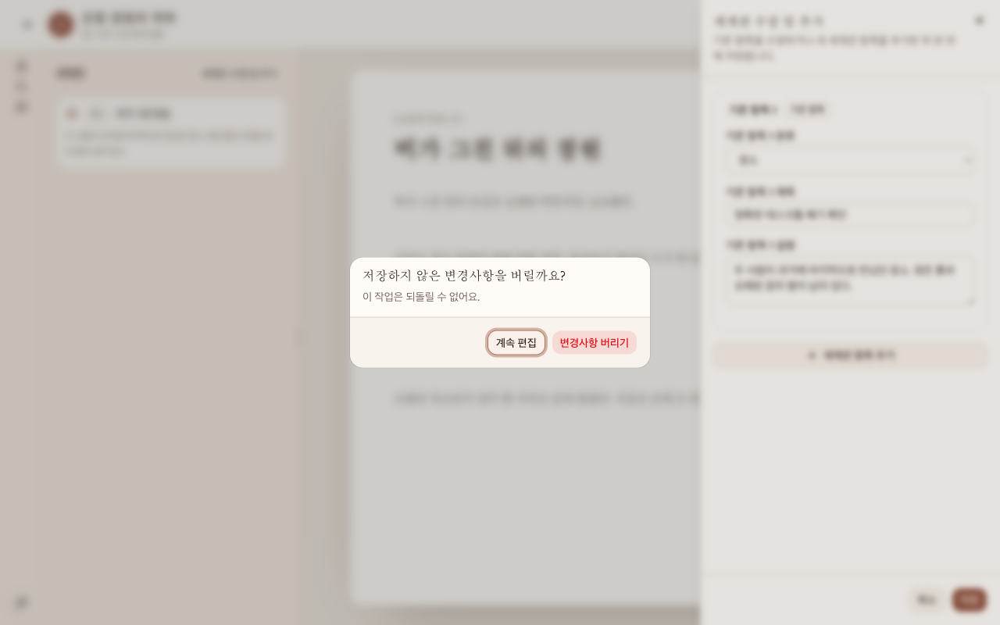
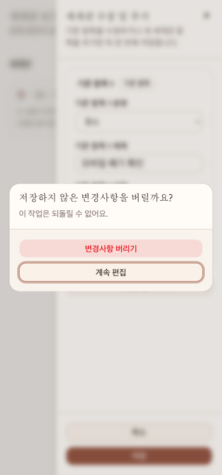

브라우저 버그 탐색 보고서
WorldDiscardDialog
생성 시각:
탐색 범위
WorldDiscardDialog에 한정해 dirty 세계관 편집기의 명시적 닫기, Escape, 브라우저 Back, revision conflict의 reload-latest, 계속 편집과 폐기·reload 확정, dialog 초기 포커스와 focus trap, desktop/mobile 배치, 저장 중 frozen state를 확인했다. 정상 확정 경로를 먼저 확인하고 결함 후보는 clean MSW 시작 상태에서 반복했다.
제외 범위
제품 코드·테스트·설정·기존 문서 수정, 새 서버 실행, 외부 네트워크, 실제 backend 데이터 변경, WorldEditorSheet 자체 레이아웃 수정, 인물·원고 dialog와 애플리케이션 전체 감사는 제외했다. 데이터 변경은 브라우저 MSW 메모리 안의 revision conflict와 저장 검증에만 한정했다.
실행 환경
- 대상 라우트
http://127.0.0.1:4173/projects/silver-garden/write?tab=world- 시작 상태
- 개발 MSW
silver-gardenseed, Story Bible revision1, 세계관 제목비가 그친 온실, 인증 없음. 각 clean 재현은 직접 route navigation과 로컬 draft 폐기 또는 mock session 초기화로 seed 상태를 확인한 뒤 시작했다. - 뷰포트
375x800,1280x800. 테스트 MCP에 resize 도구가 없어 동일 출처의 독립 iframe browsing context를 정확한 크기로 설정했고, 각 frame의innerWidth/innerHeight로 확인했다. 초기 두 clean 재현은 top-level1280x720에서도 수행했다.- 실행 기준
8c3ef59(main)- 브라우저
playwright-testMCP의 기본 Chromium,planner_setup_page({})1회, project 지정 없음.
결과 요약
등록한 버그
이 bounded 실행에서 새로 등록할 수 있는 비중복 결함은 없었다. 확인된 포커스 이탈은 이미 등록된 티켓 #15와 동일하며, 새 티켓·새 설계 문서·새 구현 계획은 만들지 않았다.
중복 · 심각도 Medium
계속 편집 뒤 포커스가 WorldEditorSheet로 돌아오지 않는다
- 기존 티켓
#15·세계관 변경사항 폐기 취소 후 편집기 포커스 이탈- 문서
- 설계 · 구현 계획
- 기대 결과
REQ-WORLD-006과REQ-WORLD-010에 따라 dialog만 닫히고 exact draft와 editor URL을 보존한 채 유효한 WorldEditorSheet control로 포커스가 돌아가야 한다.- 실제 결과
Escape뒤Enter, 명시적 닫기 뒤 마우스 클릭, dirtyBack취소,reload-latest취소에서 draft와panel=world-editor는 유지됐지만document.activeElement가BODY였고 Sheet 안에 있지 않았다.- 두 번의 clean 재현
- 직접 route navigation → editor 열기 → 제목을 dirty 상태로 변경 →
Escape→ 초기 포커스의계속 편집을Enter로 선택. draft 유지, URL 유지, active elementBODY. - 새 route navigation → editor 열기 → 다른 제목으로 변경 → 명시적 닫기 →
계속 편집을 마우스로 선택. draft 유지, URL 유지, active elementBODY.
- 직접 route navigation → editor 열기 → 제목을 dirty 상태로 변경 →
- 중복 판정
- 티켓
#15의 제목·요약·설계·계획이 close, keyboard/mouse cancel, dirty navigation, revision conflict의 latest reload 취소와 동일한 사용자 영향 및 수리 범위를 이미 포함한다. fresh JSON에서 시작 시ready, 탐색 종료 시in_progress, 최종 handoff 시done임을 확인해 추가 등록하지 않았다.

1280x800에서 dialog가 중앙에 표시되고 계속 편집이 초기 포커스를 가진다.
375x800에서 제목·설명·두 action이 viewport 안에 보이고 keyboard focus trap이 유지된다.범위에서 제외한 관찰
중첩 확인 과정에서 WorldEditorSheet가 1280x800에서 384px, 375x800에서 281px로 표시되는 것을 보았지만 이는 WorldDiscardDialog 자체가 아니라 WorldEditorSheet 폭 범위이고 기존 티켓 #16이 이미 담당하므로 이 보고서의 결함 수에 포함하지 않았다.
수행한 검사
curl대상 route: HTTP200.- dirty close/
Escape: 폐기 확인이 한 번 열리고 초기 포커스는계속 편집이었다. - 키보드:
Shift+Tab은변경사항 버리기, 다음Tab은계속 편집으로 순환해 dialog 밖으로 벗어나지 않았다. - 폐기 확정: desktop에서는 editor와 dialog가 닫히고 seed 세계관·canonical URL·
세계관 수정 및 추가focus가 복원됐다. mobile에서는 아래 Context Sheet를 유지한 채 같은 launch focus가 복원됐다. - dirty navigation:
Back취소는 exact draft와 editor URL을 복원했고, 확정은 한 번 이동해 추가 dialog를 남기지 않았다. - revision conflict: MSW 안에서 revision을
1→2로 증가시킨 뒤 stale save가409 STORY_BIBLE_REVISION_CONFLICT를 반환했다.reload-latest취소는 local draft를 유지했고, 확정은서버 최신 온실snapshot을 반영했다. - frozen state: 지연된 MSW PUT 중 모든 field·추가·닫기·취소·저장 control이 disabled였고
Escape가 Sheet를 닫거나 discard dialog를 열지 않았다. 성공 뒤 authoritative 값과 launch focus가 표시됐다. - 반응형:
375x800과1280x800frame viewport를 직접 측정했다. WorldDiscardDialog의 제목·설명·두 action은 양쪽에서 viewport 안에 있었고 focus trap 및 확정 focus가 동등했다. - network: clean load의
GET /api/projects/silver-garden/workspace와GET /api/projects/silver-garden/story-bible는200. conflict 검증의 PUT은 의도한409, latest refetch와 정상 저장은200이었다. - console: 제품 런타임 예외나 MSW unhandled request는 없었다. 개발 favicon
404와 의도적으로 만든 conflict PUT409resource error만 기록됐다. zellij-agent ticket-worker list --json: 시작과 종료에 fresh 조회했다. 티켓#15와#16의 중복 범위 및 상태를 확인했다.git status --short --branch: 시작과 종료에 확인하고 기존 수정·삭제·다른 에이전트의 미추적 문서를 보존했다.bash .codex/agents/tests/validate-bug-hunter.sh: 보고서 검사 전에 기존 수정 상태인.codex/agents/bug-hunter.toml에서 필수 문자열zellij-agent ticket-worker list --json을 찾지 못해 종료 코드1로 중단됐다. 타인 소유 변경을 보존하기 위해 agent 설정은 수정하지 않았다.- 보고서 자체 검사: 미치환 template token,
script/CDN, 줄 끝 공백이 없고 네 PNG가 각각1280x800,1280x720,375x800,375x800으로 확인됐다.
제약 및 미확인 항목
테스트 MCP에 top-level viewport resize 도구가 없어 정확한 지정 크기는 동일 출처 iframe browsing context로 검증했다. 외부 backend, 인증, 실제 영구 데이터는 확인하지 않았다. 탐색 종료 조회에서 티켓 #15가 in_progress로 바뀐 것을 확인한 즉시 추가 브라우저 탐색을 중단했다. 최종 handoff 조회에서는 done이었지만 구현 이후 동작은 재검증하지 않았다. 저장 실패의 별도 500 retry 분기는 WorldDiscardDialog가 나타나지 않고 WorldEditorFeedback이 소유하므로 이 bounded 보고서에서는 별도로 가로채지 않았다. 공식 validator는 기존 agent 설정 assertion에서 멈춰 보고서 단계까지 도달하지 못했다. 확인된 원인 설명은 없으며 소스상 lifecycle 차이는 원인으로 단정하지 않았다.